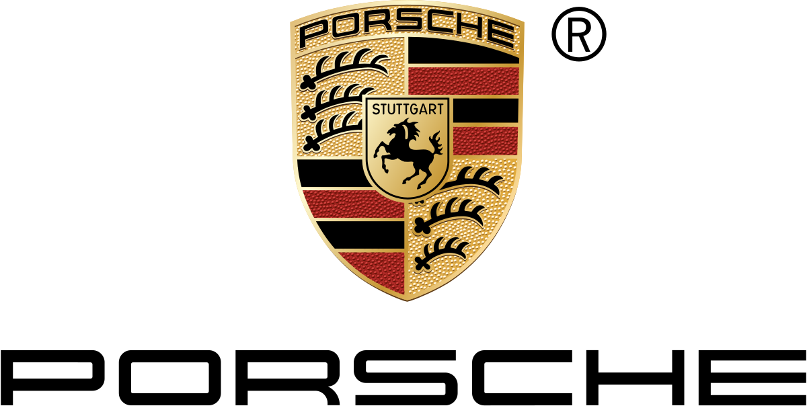
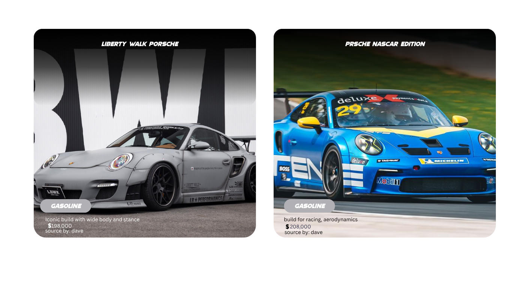
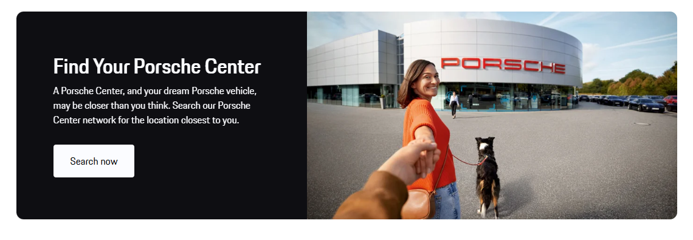

<!DOCTYPE html>
<html>
    <head>
        <title>CASTILLO PORSCHE  </title>
        <link rel="stylesheet" href="castillo.css">
        <nav></nav>  
    </head>
</body>
</html>
<body>
    </article>
    <header>
        
    </header>
    <center>
    <main>
        <h2> THE ONE AND ALWAYS</h2>
        <p style="font-family: 'Times New Roman', Times, serif;">New 911 GT3</p>
        <br>
       
        <a href="https://www.porsche.com/"></a>
    </main>
    </center>
    <h3></h3>
    <aside>
       <hr><br><center><p>For almost 25 years the 911 GT3 has accepted only the limits of physics – and left the ordinary far behind. Motorsport-tested design and maximum performance ensure it unwaveringly bridges the boundary between the racetrack and the road.</p><br><hr>
       </center>
       <h1 class="daee" style="font-family: Verdana, Geneva, Tahoma, sans-serif;">Your Porsche journey starts now.</h1><br><br>
       <center> <video src="On track in the new Porsche 911 GT3 RS (1).mp4" controls width="900px" type="mp4" ></video>
       </center><br>
       <center><h1>I Special thing about porche 911 GT3</h1></center><br>
       <center><p>All feature the venerated naturally aspirated flat-six engine and elevate it to new heights. The 4.0-liter unit makes 502 horsepower in the GT3 and 518 in the GT3 RS, producing an intoxicating soundtrack all the way to its 9000-rpm redline. </p></center><br>
       <hr>

       <Center><h1 class="para1" style="color: red;" >I OTHER INFO</h1></Center><br>
       <CENTER><p>In 2009, Porsche launched the 2nd Generation 997 GT3 (commonly known as the 997.2 GT3[15]), with an enlarged 3.8 litre engine rated at 320 kW (435 PS). It also featured a number of new options including dynamic engine mounts and a pneumatically lifting front axle to compensate for the low ground clearance. The rear spoiler was also modified along with other parts of the bodywork. Deliveries in Europe commenced in November the same year. A total of 654 units were sold in the United States and 58 units in Canada.</p></CENTER>
       
       <center><u><a href="https://en.wikipedia.org/wiki/Porsche" style="color: red;">for more info about porsche</a></u></center>
     <br><br><hr> <center><h1 style="color: rgb(0, 0, 0);">I Build Your Dream Porsche with Hendrick Porsche of Charlotte</h1></center>      
     <br><br> <br><br>
     <center><j><p>Have you been dreaming of cruising around Matthews in a stunning new Porsche vehicle? Whether you’re behind the wheel of a Porsche 911 or a Porsche Macan in your daydreams, you can make it your reality at Hendrick Porsche. Our easy-to-use Porsche configurator allows you to build out your custom Porsche with just a few simple clicks. Once you’re satisfied with your build, all that’s left to do is contact us to find out if there’s a match for you in our current inventory.</p></j></center><br>
     <center><u><a style="color: rgb(255, 0, 0);" href="https://configurator.porsche.com/en-US/model/992142?options=SX.0Q.7UG.95B.9JA.6F1.QJ6.6FW.FZ0.9WT.QH1.1P0.7AL.4UB.FN7.1T0.9VK.9AD.0TC.UX7.GV1.5TH.VT6.8IT.2C5.0P9.6JD.4A3.VL0.E0A.8T1.QQ2.Q4Q.K8C.4F6.6E1.VC2.4L6.3HA.0NB.2W0.6XV.VF2.7K3.9ZE.0I3.6K8.0N5.8VG.KQ3.2D1.UI2.7HC.G1F.EM2.0K1.7V0.1BV.3FA.GT0.KA2.6NA.1X2.GH3.5KS.D7B.1NA.3J9.58Y.1N1.J2B.UP1.8Z6.IW3.4GP.1LS.6BA.2ZF.7X2.2V1.1G8.8LH.VR0.Z1S&viz-mode=3d">build your own porsche here</a></u></center><br>
    </aside>
    <footer>
      <p style="font-family:'Times New Roman', Times, serif">P O R S C H E</p><hr>
      <p>© 2025 Porsche Asia Pacific Pte. Ltd. Legal Notice.  Privacy Policy.  Cookie Policy.  Open Source Software Notice.  Whistleblower System. -dave castillo</p>
    </footer>
   
</body>
</html>